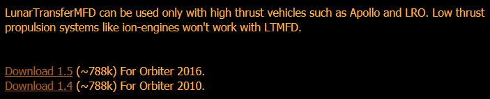
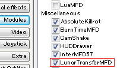
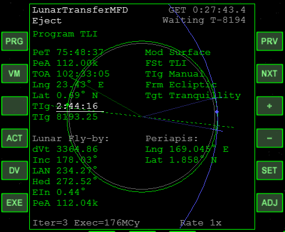

LunarTransferMFDのダウンロード+インストール
LunarTransferMFDは、地球から月へのフライトのためのMODです。
地球→月における軌道予測の精度が高く、AMSOのアポロ宇宙船など、Delta Vの制限が厳しいミッションで活躍します。※
※地球とその月でしか使えません。
※イオンエンジンなどはサポートしていません。
※作成できる軌道には制限があります。TransXやIMFDのような自由度はありません。
ダウンロード
ダウンロードは以下のリンクから。
Interplanetary MFD - Orbiter addon
Orbiter2010なら1.4
Orbiter2016なら1.5
対応バージョンを選んでダウンロード。

インストール
ダウンロードしたファイルを解凍して中身をOrbiterフォルダに上書き。
LaunchpadのModulesタブで、LunarTransferMFDにチェックを入れる。

操作方法
基本的な操作は、IMFDとほぼ同じです。
IMFD Part1 Target Interceptとフライトプランの作成
| PRG | Program menuを開く |
| PRVorNXT | ほかの項目へ移動 |
| +or- SET |
入力・選択 |
| ADJ | 倍率の変更 |
| EXE | 設定項目の決定・実行 |
| DV | エンジン噴射のための画面を開く |
| VM | 画面の変更（月通過・地球最接近などを切り替えられる） |
地球軌道上から月へ向かう場合は、以下のような手順になります。
PRGをクリックしてProgram menuを開く。
Program TLIを選択。
Program TLIにて、出発時刻(TIg)、到着時刻(PeT)などを入力する。
EXEをクリック。
DVをクリックしてDelta Velocity画面を開いてから、もう一度EXEをクリックする。
自動噴射のカウントダウンが開始される。
